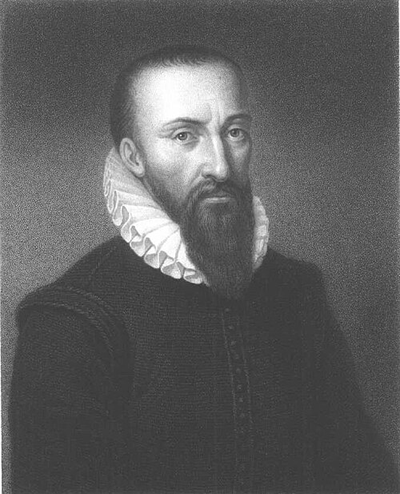
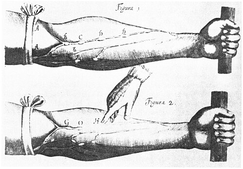

Meoncross School | History Department
Renaissance
Paper 1: Medicine Through Time with the Western Front
Course Textbook
Contents
|
Lesson 1: KT2.1: Did the Renaissance change beliefs about the causes of illness?
|
Page 3
|
|
Lesson 2: KT2.2: Did treatments improve during the Renaissance?
|
Page 6
|
|
Lesson 3: KT2.3: How significant were William Harvey and the Great Plague?
|
Page 10
|
L1: KT2.1: Did the Renaissance change beliefs about the causes of illness?[[SRC_MARKER:L3_Start]]
Learning Objectives
Explain how Thomas Sydenham's scientific approach to observation changed the diagnosis of disease.
Assess the role of the printing press and the Royal Society in communicating and spreading scientific ideas.
The Medical Renaissance was an exciting era of intellectual shift. As the Church's influence slowly declined, a new 'scientific approach' emerged that encouraged questioning traditional authority. While ordinary people still clung to old superstitions and the Four Humours, brilliant individuals and new technologies began to challenge ancient medical ideas, laying the vital foundations for modern medicine.
Did you know?
- 1676: The year Thomas Sydenham published his groundbreaking textbook Observationes Medicae, revolutionizing medical diagnosis.
- c.1440: The approximate year Johannes Gutenberg invented the printing press, allowing medical ideas to spread without Church censorship.
- 1665: The year the Royal Society first published Philosophical Transactions, the world's first scientific journal for sharing discoveries.
Do Now Activity
1. In what year did the Black Death arrive in England?
2. Who were the 'flagellants'?
3. State one common medieval preventative measure for the Black Death.
4. What was the Renaissance?
5. What invention helped spread new medical ideas during the Renaissance?
6. Who was Thomas Sydenham?
7. How did medieval hospitals differ from modern ones?
8. What was the purpose of 'bleeding' (phlebotomy) in medieval medicine?
9. Why did the influence of the Church begin to decline in the Renaissance?
10. What was the Royal Society?
Vocabulary Check
Fill in the blanks using the vocabulary words below.
Humanism | Nullius in Verba | Animalcules
During the Medical Renaissance, a cultural shift known as ________ encouraged doctors and scientists to think for themselves, question ancient texts, and verify claims through empirical observation. This hands-on mindset was championed by the Royal Society, whose strict motto ________ drove researchers to reject traditional theories in favor of rigorous experimentation. Although new scientific instruments like advanced microscopes allowed pioneers to observe microscopic ________ for the very first time, these discoveries had little immediate impact on treating patients because there was no proof that these tiny organisms actually caused illness.
[[SRC_MARKER:L3_Source_0]]
Source A: The Printing Press
An early printing press, which helped spread new medical ideas during the Renaissance.
The Medical Renaissance Begins
During the Renaissance, there was a revival of learning and a new desire to question old ideas. The invention of the printing press in 1440 meant that books could be copied quickly and cheaply, reducing the Church's control over information. At the same time, the Royal Society was founded in 1660 to promote scientific experiments and share new discoveries across Europe.
One of the biggest changes was in anatomy. Andreas Vesalius began dissecting human bodies himself and proved that Galen had made over 300 mistakes (because Galen had only dissected animals). Vesalius published his highly accurate anatomy book, 'The Fabric of the Human Body', in 1543. However, despite these breakthroughs in anatomy, people still didn't know what caused disease, and the theory of the Four Humours remained widely believed.
Andreas Vesalius
Continuity and Change in Explanations
The Theory of the Four Humours was gradually discredited by physicians as new anatomical discoveries proved Galen wrong, but the general public still widely believed it.
The belief that God sent disease declined as the Catholic Church lost power and society became more secular, though people still turned to religion in terror during major epidemics like the Great Plague of 1665.
Miasma (bad air) remained a highly popular rational explanation for disease, especially in growing, dirty cities. Because the actual scientific cause of disease (germs) had not yet been discovered, everyday medical treatment experienced very little change, even though the old theories were finally being questioned.
[[SRC_MARKER:L3_Task_2_0]]Q1. Identify one invention that helped spread new ideas during the Renaissance.
Thomas Sydenham and the Scientific Approach
Thomas Sydenham, nicknamed the 'English Hippocrates', was a highly respected doctor in London during the 1660s and 1670s.
He refused to blindly rely on the ancient books of Galen. Instead, he focused on making detailed, direct observations of a patient's symptoms and keeping accurate records.
In 1676, he published Observationes Medicae, arguing that diseases were like plants and animals that could be classified into different species (for example, he successfully distinguished scarlet fever from measles as entirely separate diseases). Sydenham's work was a major turning point because it shifted medical diagnosis away from a patient's personal 'humours' and toward identifying and treating specific, external diseases.
Knowledge Check (Q3)
How did Sydenham's belief that diseases were like plants or animals challenge the traditional Theory of the Four Humours?
- A. It proved that diseases were caused by invisible germs.
- B. It meant diseases were separate entities with specific symptoms, rather than a personal imbalance of a patient's humours.
- C. It showed that diseases could only be cured by herbal remedies.
- D. It proved that diseases were a punishment from God.
[[SRC_MARKER:L3_Task_3_0]]Q2. Describe what Vesalius discovered about Galen.
Thomas Sydenham
The Influence of the Printing Press
Invented by Johannes Gutenberg in c.1440, the printing press allowed books to be mass-produced quickly, accurately, and cheaply.
Crucially, it took book production out of the hands of the monks and the Church, meaning religious authorities could no longer censor ideas they disapproved of. The printing press revolutionized medicine because it allowed ground-breaking, anti-Galen discoveries (like the anatomical drawings of Vesalius) to spread rapidly across Europe before traditional authorities could stop them.
[[SRC_MARKER:L3_Task_5_0]]Q4. Explain the purpose of the Royal Society.
The Royal Society
The Royal Society was founded in London in 1660 to discuss new scientific ideas and carry out experiments.
Its motto was Nullius in verba ("Take nobody's word for it"), actively encouraging scientists to challenge ancient traditions and demand proof.
In 1662, it received a Royal Charter from King Charles II, giving the group immense credibility.
In 1665, it began publishing the world's first scientific journal, Philosophical Transactions, which shared new discoveries like Antony van Leeuwenhoek's observation of 'animalcules' (bacteria). The Royal Society was essential for medical progress because it provided a formal, highly respected platform for scientists across Europe to share, debate, and verify each other's medical breakthroughs.
[[SRC_MARKER:L3_Task_6_0]]Q5. Evaluate the extent to which the Renaissance changed beliefs about the causes of illness.
Pair & Share Activity
Q6. In the period c1500-c1700, was the work of individual physicians like Thomas Sydenham more important in challenging traditional medical beliefs than institutional developments like the founding of the Royal Society?
Historian's Corner: The Debate over the Pace of Change in Renaissance Medicine
Historians often debate the extent to which the Renaissance c1500-c1700 represented a genuine breakthrough or a period of stagnation in the understanding of disease causes. Traditional historians emphasize a 'Scientific Revolution,' pointing to the works of Vesalius, Harvey, and Leeuwenhoek as a rapid and complete dismantling of medieval Galenism. However, revisionist historians argue that this period was actually characterized by overwhelming continuity for the average patient. They argue that while elite physicians in organizations like the Royal Society debated new ideas, daily treatments (such as bleeding and purging to balance the humours) remained completely unchanged. Because there was no scientific proof that Leeuwenhoek's 'animalcules' actually caused disease, everyday medical practice clung tightly to the Theory of the Four Humours and miasma for centuries after the Renaissance.
Q7. Explain why there were changes in the way ideas about the causes of disease and illness were communicated in the period c1500-c1700. (12 marks)
GCSE Exam Practice
Q8. Explain why there was rapid progress in anatomical knowledge in the Renaissance period (c1500-c1700). (12 marks)
Q9. Explain one way in which knowledge of human anatomy in the Renaissance period (c1500-c1700) was different from knowledge of human anatomy in the medieval period (c1250-c1500). (4 marks)
L2: KT2.2: Did treatments improve during the Renaissance?[[SRC_MARKER:L4_Start]]
Learning Objectives
Analyze the continuities and changes in Renaissance treatments and preventions, including the impact of exploration and alchemy.
Explain how institutional changes, specifically the Dissolution of the Monasteries, altered hospital care in England.
The Medical Renaissance saw an explosion of scientific curiosity, yet this rarely translated into better everyday medical care. While pioneer anatomists fundamentally transformed medical training by proving ancient authorities wrong, the average patient still relied on traditional herbal remedies, bleeding, and local wise women. The unexpected closure of monastery hospitals forced a massive rethink in healthcare, slowly paving the way for specialised hospitals focused on actually curing the sick.
Did you know?
- 1536: The year King Henry VIII initiated the Dissolution of the Monasteries, forcing the vast majority of English hospitals to close.
- 1543: The exact year Andreas Vesalius published his revolutionary, highly accurate anatomy textbook, On the Fabric of the Human Body.
- 300: The approximate number of anatomical mistakes Vesalius proved Galen had made because the Roman physician had dissected animals instead of humans.
Do Now Activity
1. What was the Renaissance?
2. What invention helped spread new medical ideas during the Renaissance?
3. Who was Thomas Sydenham?
4. Who wrote 'On the Fabric of the Human Body' (1543)?
5. What did Vesalius prove about Galen's anatomical ideas?
6. What was 'transference'?
7. In what year did the Black Death arrive in England?
8. Explain the role of the apothecary in medieval medicine.
9. Why did Vesalius' anatomical discoveries have limited immediate impact on medical treatments?
10. Name one new herbal remedy brought to Europe from the New World.
Vocabulary Check
Write a historically accurate sentence connecting two terms from the glossary box below.
Transference | Iatrochemistry | Dissolution of the Monasteries
Your Sentence:
[[SRC_MARKER:L4_Source_0]]
Source A: Pare and Paracelsus

A contemporary portrait of Ambroise Paré, the famous Renaissance surgeon who revolutionized the treatment of gunshot wounds.
Treatments in the Renaissance
Despite the brilliant discoveries in anatomy during the Renaissance, treatments for ordinary people hardly changed at all. Doctors still could not cure infectious diseases, so they continued to rely on traditional methods like bloodletting, purging, and herbal remedies.
The only real changes in treatment came from the discovery of the 'New World' (the Americas). Explorers brought back new herbs and plants, such as the bark of the Cinchona tree, which was used to treat malaria, and sarsaparilla, which was used to treat syphilis. Furthermore, Thomas Sydenham, known as the 'English Hippocrates', began encouraging doctors to observe their patients' symptoms closely and treat the specific disease, rather than just treating the symptoms individually.
Continuity and Change in Treatment
Bleeding, purging, and sweating remained the most common everyday treatments because the general public and physicians still firmly believed that an imbalance of the Four Humours caused disease.
A newly popular theory was transference-the belief that an illness could be transferred to an object or animal (for example, rubbing warts with an onion, or sleeping next to a sheep to cure a fever).
Global exploration brought new exotic herbal remedies from the New World (the Americas), such as the use of cinchona bark, which contains quinine, to successfully treat malaria.
The growth of alchemy led to iatrochemistry (medical chemistry), popularized by the physician Paracelsus. This introduced powerful mineral-based cures, such as antimony and mercury, to forcefully purge the body of disease, which challenged traditional plant-based herbalism. Although exotic new herbs and powerful chemicals were introduced, treatment experienced massive continuity overall because doctors were still fundamentally trying to fix the body's internal balance rather than fighting germs.
[[SRC_MARKER:L4_Task_1_0]]Q1. Identify one new herbal remedy brought from the 'New World'.
Continuity and Change in Prevention
People still desperately tried to avoid breathing in miasma (bad air) by carrying sweet-smelling herbs, and town councils continued to enforce the removal of rotting sewage from streets.
People still followed the Regimen Sanitatis (moderation in diet and exercise), but also began using new instruments like barometers to try and link specific weather conditions to outbreaks of disease.
Crucially, bathing became far less fashionable. The terrifying spread of syphilis (the Great Pox) across Europe had been linked to public bathhouses, so people instead tried to keep clean by regularly changing their linen clothes. Despite changing attitudes towards public bathing and a more scientific approach to observing the weather, prevention methods remained largely ineffective because the true microscopic causes of disease remained invisible.
Knowledge Check (Q3)
Why was the importation of cinchona bark from South America a more successful treatment than traditional humoural methods?
- A. It contained quinine, which actually treated the specific symptoms of malaria, rather than just attempting to rebalance humours.
- B. It was a holy relic blessed by the Pope.
- C. It killed the germs that caused malaria.
- D. It was used to draw bad humours out of the skin.
[[SRC_MARKER:L4_Task_2_0]]Q2. Describe the approach of Thomas Sydenham.
Medical Care: Hospitals and the Community
In 1536, King Henry VIII ordered the Dissolution of the Monasteries. Because the vast majority of hospitals were run by monks and nuns on church land, the hospital system was devastated, shutting down almost all hospital beds in England.
A few hospitals, such as St Bartholomew's, only survived because the citizens of London petitioned the King directly to refound it as a municipal hospital. Slowly, new charity-funded hospitals opened that actually employed physicians to focus on curing the sick, rather than just caring for their souls.
Pest houses (or plague houses) began to appear; these were specialized isolation hospitals created specifically to quarantine patients suffering from highly contagious diseases.
Despite these changes, the vast majority of sick people continued to be cared for at home by female family members mixing cheap herbal remedies. The closure of the monasteries temporarily devastated the hospital system, but ultimately triggered a vital shift towards hospitals becoming places of practical medical treatment rather than religious rest homes.
[[SRC_MARKER:L4_Task_3_0]]Q4. Explain why treatments for ordinary people hardly changed during the Renaissance.
Medical Training and the Work of Vesalius
Physicians still trained at universities, but dissection was finally legalised and became a central, highly fashionable part of their education. Students learned using highly detailed printed fugitive sheets (anatomical drawings with liftable paper layers).
The most famous anatomist of the period was Andreas Vesalius, a lecturer in surgery at the University of Padua.
In 1543, Vesalius published his groundbreaking, heavily illustrated anatomy book: On the Fabric of the Human Body.
By performing dissections on executed criminals, Vesalius proved that Galen had made over 300 mistakes. For example, he proved the human jawbone is one solid bone, not two; that the breastbone has three segments, not seven; and that blood does not flow through invisible pores in the heart's septum. Vesalius revolutionized medical training because he proved that the ancient texts were flawed, actively encouraging generations of doctors to perform their own dissections and believe their own eyes rather than blindly trusting tradition.
[[SRC_MARKER:L4_Task_4_0]]Q5. To what extent did the 'New World' improve medical treatments?
Pair & Share Activity
Q6. In the period c1500-c1700, did the introduction of global herbal remedies and chemical cures represent a more significant improvement in treatment than the gradual reforms made to the training of physicians?
Historian's Corner: The Debate over Renaissance Progress: Breakthrough or Backstep?
Historians actively debate whether the Renaissance represented genuine progress in patient care or a period of regression. Traditionalist accounts often celebrated the 'rebirth' of medical science, highlighting how the shift towards chemical cures and Vesalian anatomy laid the foundations of modern clinical practice. However, revisionist social historians argue that for the average sick person, the Renaissance was actually a time of decline in care. They point out that Henry VIII's closure of the monasteries in 1536 destroyed the medieval hospital safety net, leaving thousands of poor patients without any institutional care. Furthermore, they highlight that some new treatments, such as using highly toxic mercury to treat syphilis or smoking tobacco as a 'cure-all' defense against plague, actually did far more physical harm than medieval herbal remedies ever did.
Q7. Explain why there was rapid progress in anatomical knowledge in the Renaissance period (c1500-c1700). (12 marks)
GCSE Exam Practice
Q8. Explain why there was little change in medical treatments during the Renaissance period (c1500-c1700), despite new anatomical discoveries. (12 marks)
Q9. Explain one way in which medical treatments in the Renaissance period (c1500-c1700) were similar to medical treatments in the medieval period (c1250-c1500). (4 marks)
L3: KT2.3: How significant were William Harvey and the Great Plague?[[SRC_MARKER:L5_Start]]
Learning Objectives
Explain the significance of William Harvey's discovery and the reasons for its limited short-term impact.
Compare the government and public responses to the 1665 Great Plague with the 1348 Black Death.
By the 17th century, medical knowledge was advancing, but practical treatment lagged far behind. William Harvey's brilliant discovery of blood circulation proved ancient theories wrong and laid the foundations for modern physiology, though it saved no lives at the time. Meanwhile, the devastating Great Plague of 1665 demonstrated that without an understanding of germs, even organized government action was powerless to stop a catastrophic epidemic.
Did you know?
- 1628: The year William Harvey published his groundbreaking book proving the circulation of the blood.
- 100,000: The approximate number of Londoners who died during the Great Plague of 1665 (one-fifth of the city's population).
- 28: The number of days an infected family was locked inside their house under the strict new quarantine rules.
Do Now Activity
1. Who wrote 'On the Fabric of the Human Body' (1543)?
2. What did Vesalius prove about Galen's anatomical ideas?
3. What was 'transference'?
4. What did William Harvey discover about the human body?
5. What did Harvey prove wrong about Galen's theories of blood?
6. In what year did the Great Plague hit London?
7. How did local mayors try to prevent the spread of the Black Death in 1348?
8. What was the Theory of the Four Humours?
9. What was the 'Stagnation Paradox' regarding Harvey's discovery?
10. Explain one way the government response to the Great Plague (1665) was better than the Black Death (1348).
Vocabulary Check
Write a clear definition and a historically accurate sentence for the term: Circulation
[[SRC_MARKER:L5_Source_0]]
Source A: Harvey on the Heart

William Harvey demonstrating the circulation of blood and valves in the veins.
William Harvey and the Great Plague
In 1628, William Harvey made one of the most important discoveries in medical history: he proved that blood circulates around the body, pumped by the heart. He completely destroyed Galen's theory that blood was constantly being made in the liver and burned up by the muscles. Harvey proved this by dissecting cold-blooded animals and experimenting on human veins.
However, in 1665, the Great Plague struck London, proving that while anatomical knowledge had improved, prevention of disease had not. People still blamed miasma and the planets, though local governments did take stronger action this time. The Mayor of London ordered victims to be locked in their houses with a red cross painted on the door, and banned public gatherings. Yet, just like in 1348, the true cause (fleas on rats) remained unknown.
William Harvey
William Harvey and the Circulation of the Blood
William Harvey was an English doctor who studied at the famous medical university in Padua, Italy, before eventually becoming the personal royal physician to King Charles I.
In 1628, he published his groundbreaking book, An Anatomical Account of the Motion of the Heart and Blood in Animals.
By using mechanical pump calculations and dissecting cold-blooded animals (whose slower heartbeats allowed him to observe muscle movement), he proved that blood circulates around the body in a one-way system, and that the heart acts as a muscular pump.
He proved that the ancient Roman physician Galen was wrong when he claimed that blood was constantly manufactured in the liver and absorbed as fuel by the body. Harvey's work was a massive scientific breakthrough because it proved that traditional ancient texts were flawed and laid the vital foundations for modern physiology and future developments in surgery and blood transfusions.
[[SRC_MARKER:L5_Task_2_0]]Q1. Identify what William Harvey proved about the blood.
The Limits of Harvey's Discovery
Despite his brilliance, Harvey's discovery had almost no immediate impact on everyday medical treatment because understanding how blood circulates did not help a doctor cure a fever or treat a disease in 1650.
Many traditional doctors initially rejected his ideas because they went against Galen, and some even openly criticised him. It took until 1673 for his theories to be widely taught in universities.
Furthermore, he could not explain how blood moved from arteries to veins because capillaries were invisible to the naked eye. Historians often call this the 'Stagnation Paradox': it is important to remember that Vesalius and Harvey had almost zero immediate impact on bedside treatment. Knowing that blood circulated did not give physicians new drugs, meaning patients still demanded traditional humoural bleeding and purging.
Knowledge Check (Q3)
What was the main reason why Harvey's discovery of blood circulation did not immediately change medical treatments?
- A. Because he refused to publish his findings in a book.
- B. Because the Church banned his book and executed him.
- C. Because knowing how the blood circulated did not provide doctors with any new drugs or cures for sick patients.
- D. Because he still believed the liver manufactured blood.
[[SRC_MARKER:L5_Task_3_0]]Q2. Describe how Harvey proved Galen wrong.
Causes and Treatment of the Great Plague (1665)
In 1665, the Great Plague struck London, eventually killing 100,000 people (one in five Londoners).
Since nobody knew about germs, people blamed the same causes as the Black Death of 1348: God's punishment for mankind's wickedness, an unusual alignment of the planets, and mostly miasma (bad air pouring out of the stinking city earth).
Treatments were still highly ineffective. Physicians advised patients to wrap up in thick woollen cloths by a fire to sweat the disease out.
The theory of transference was also popular: people tried strapping a live chicken to the buboes to draw out the poison. Quack doctors also made fortunes selling fake herbal remedies like 'London treacle' or 'plague water'. The bizarre and ineffective treatments used during the Great Plague prove that, despite the scientific discoveries of the Renaissance, practical medicine had experienced almost total continuity since the Middle Ages.
[[SRC_MARKER:L5_Task_4_0]]Q4. Explain how the Great Plague of 1665 was dealt with differently from the Black Death.
Prevention and Government Action in 1665
The biggest change from the Black Death was the highly organized response from the local government and King Charles II. Public meetings, theatres, and large funerals were banned to stop the spread.
The mayor appointed searchers to identify infected houses. Victims were quarantined inside their homes for 28 days, and their doors were painted with a red cross and the words "Lord have mercy on us".
To clear the deadly miasma, large fires and barrels of tar were burned in the streets.
Tragically, the mayor also ordered the slaughter of 40,000 dogs and 200,000 cats, mistakenly believing they spread the disease. Although the government took a much more active and organized role in trying to prevent the plague, their efforts ultimately failed because their actions were based on incorrect theories about bad air rather than exterminating the true culprits: the rats and fleas.
[[SRC_MARKER:L5_Task_5_0]]Q5. Evaluate the short-term significance of Harvey's discovery.
Pair & Share Activity
Q6. Why was William Harvey's brilliant discovery of blood circulation completely ignored in the prevention and treatment of the Great Plague of 1665?
Historian's Corner: The Debate over the Significance of William Harvey
Historians often debate whether William Harvey represents a sudden turning point or a very gradual stepping stone in medicine. Traditionalist historians celebrate his work as a revolutionary breakthrough that demolished Galenic physiology. However, revisionist historians emphasize the extreme limits of his immediate significance. They point out that a lot of contemporary doctors simply ignored or openly criticized Harvey because his discovery offered no practical treatment for sick patients. As a result, English medical textbooks continued to print Galen's flawed theories until 1651, and Harvey's findings were not taught in universities until 1673, decades after his discovery.
Q7. 'The most effective method of preventing the spread of the Great Plague (1665) was the use of quarantine.' How far do you agree? Explain your answer. (16 marks + 4 marks for SPaG)
GCSE Exam Practice
Q8. Explain why the government's response to the Great Plague of 1665 was more effective than its response to the Black Death of 1348. (12 marks)
Q9. Explain one way in which the response to the Great Plague in London (1665) was different from the response to the Black Death (1348). (4 marks)
Generated: 2026-08-26 18:35:06 UTC | Unit: edexcel_medicine